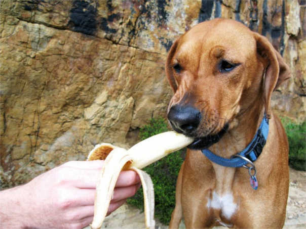

La Importancia de una buena alimentación
 La alimentacion de un perro es la base para poder vivir y dependiendo de ella, la salud del animal variará para bien o para mal.
La alimentacion de un perro es la base para poder vivir y dependiendo de ella, la salud del animal variará para bien o para mal.
Los perros en un principio eran carnívoros. Pertenecen a la especia de canis familiaris y están incluidos en el grupo de los carnivoros, donde ambien se encuentras los lobos, los osos, los gatos y ortos muchos animales.
Pero desde que se hizo amigo del hombre, ha cambiado sus hábitos alimenticios. Ya no son unos carnivoros estrictos y su capacidad metabólica ha cambiado, pero su alimentación sigue siendo mayormente de carne. Lo cierto es que el perro actual es practicamente omnivoro.
Lo básico
Dejando a un lado los nutrientes básicos necesarios para todo animal (agua, albúmina, hidratos de carbono, grasas y sales) son también imprescindibles las vitaminas. Si el aporte de nutrientes y energía es inadecuado, la salud de nuestra mascota no será buena. y esta incorrecta alimentación le provocará tarde o temprano, a nuestro perro la aparición de patologías.
Hay que tener en cuenta que los mecanismos fisiológicos del perro y del hombre son parecidos, pero distintos. Hay algunos alimenos que el perro no es capaz o no puede metabolizar de la misma manera que lo hace el hombre. Su metabolismo noes tan eficaz como el del ser humano. Sabiendo esto, se puede evitar cometer errores en la alimentación.

Errores más frecuentes
Muchos dueños no se fían de las dietas comerciales debido a que creen que sus componentes no son naturales. En vez de eso, lo que hacen es prepararles ellos mismos las comidas, pues creen que si a ellos les sienta bien, a sus mascotas también. Pero esto es erróneo. Como acabamos de decir en el apartado anterior, el metabolismo de los perros es diferente del de los humanos.
El problema no es alimentarles con alimentos frescos, que son buenos, sino la cantidad y proporción de nutrientes que les debemos suministrar y que estos necesitan. Los productos comerciales están hechos por nutricionistas y contienen la información sobre lsa cantidades adecuadas para cada perro. Los productos llamados "Premium" tienen este nombre por su mayor digestibilidad para los animales y, evidentemente, su mayor calidad.
Diferentes soluciones y consejos
Teniendo en cuenta todo esto, ya podemos actuar de forma correcta. Una vez elegido el tipo de dieta que va a seguir, debemos asegurarnos de que sea la mejor posible. Debe ser agradable al gusto del perro. Esto será más facil con los productos comerciales, como ya he dicho antes, pues viene detallado todos los componentes y las raciones a proporcionar a la mascota.
Es muy importante concientizar a todos los miembros de la familia en estabilizar y no cmabiar la dieta alimentaria de la mascota. Lo aconsejable es darle de comer después de que la familia haya comida para instaurar la dominancia en el dueño. Si se hace al revés, el perro comenzaría a tener comportamientos dominantes. El lugar donde se le debe poner el plato debe ser tranquilo. Nos debemos asegurar que no se lleve comida a otro sitio y tampoco quitársela a mitad de la comida, pues provocará ansiedad en el perro, incluso agresividad.
Por último, y como es normal, en caso de dudas es reomendable preguntar a nuestro veterinarioa, que nos puede aconsejar en todo momento de cualquier cuestión que nos surja. Éñ será el mejor para aconsejarnos a la hora de cambiar la dieta de nuestro perro, si queremos que adelgace algunos kilitos o que engorde otros tantos.